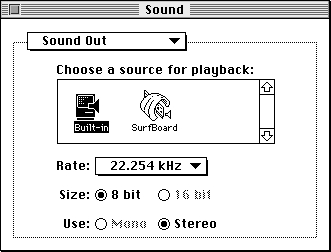

Important: Inside Macintosh: Sound is deprecated as of Mac OS X v10.5. For new audio development in Mac OS X, use Core Audio. See the Audio page in the ADC Reference Library.
Sound Recording
The Sound Input Manager provides the ability to record and digitally store sounds in a device-independent manner. You can create a resource or a file containing a recorded sound simply by calling either theSndRecordfunction or theSndRecordToFilefunction. You can then use the recorded sound in any way appropriate to your application.The sound input and storage routines can be used with any available sound input hardware for which there is an appropriate device driver. A user can select from among the available sound input devices through the Sound In control panel, shown in Figure 1-10.
Figure 1-10 The Sound In control panel

The available sound input devices are listed in the center of the panel. The control panel lists a device if its driver has previously registered itself with the Sound Input Manager and has provided a name and device icon. In Figure 1-10, two sound input devices are available, a device named Built-in and a device named WaveMaker. The highlighted icon shows which device is the current sound input device.
The Alert Sounds control panel lists the available system alert sounds, as illustrated in Figure 1-11.
Figure 1-11 The Alert Sounds control panel
The Alert Sounds control panel also includes two buttons, Add and Remove. These buttons allow the user to add sounds to and remove sounds from the list of available system alert sounds. The Add button is used to record a new alert sound and add it to the list. Clicking the Add button causes the Sound Input Manager to display a sound recording dialog box (described later in this section). Clicking the Remove button causes the Sound Input Manager to remove the selected alert sound from the list. The user can achieve the same effect by selecting a sound and then choosing the Clear command in the Edit menu. If no sound input drivers are installed in the system, these two buttons do not appear.
If the user records a sound using the Alert Sounds control panel, the recorded sound is saved as a resource of type
'snd 'in the System file. That sound then appears in the list of available alert sounds. Note that the Alert Sounds control panel supports the standard Edit menu commands on sounds stored in the System file. The Cut command copies the selected sound to the Clipboard and removes it from the list of system alert sounds. The Copy command just copies the selected sound to the Clipboard. The Paste command takes a sound copied from the Clipboard and places it in the list of available alert sounds. If your application allows users to manipulate sound resources, it should support the copying and pasting of sound resources through the Clipboard. However, the Undo command does not work with sound-related editing operations.The Sound Input Manager provides two high-level routines that allow your application to record sounds from the user and store them in memory or in a file. When you call either
SndRecordorSndRecordToFile, the Sound Input Manager presents a sound recording dialog box to the user, illustrated in Figure 1-12.Figure 1-12 The sound recording dialog box
Using the controls in this dialog box, the user can start, pause, resume, and stop recording on the currently selected sound input device. The user can also play back the recorded sound. The time indicator bar provides an indication of the current length of the recorded sound.
When the user clicks the Save button after initiating a recording from the Sound control panel, another dialog box appears asking the user to give the sound a name. Unless the user cancels the save operation at that point, the Sound control panel saves the recorded sound into a sound resource in the System file. Note that if your application can save recorded sound resources, the
SndRecordfunction does not present the dialog box that allows the user to name the sound and does not automatically save the recorded sound into a resource file. Your application must provide code to accomplish these tasks.